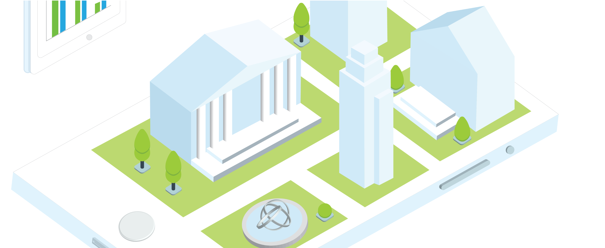

Personal Projects in Illustration/Animation
I enjoy creating illustrations and animations in my free time, and the main tools I use are Procreate, Adobe Illustrator, and Adobe Photoshop. As of late, I've been particularly drawn to web illustrations and isometric graphics. Feel free to take a look at my (growing) collection below!



Animations
Illustrations